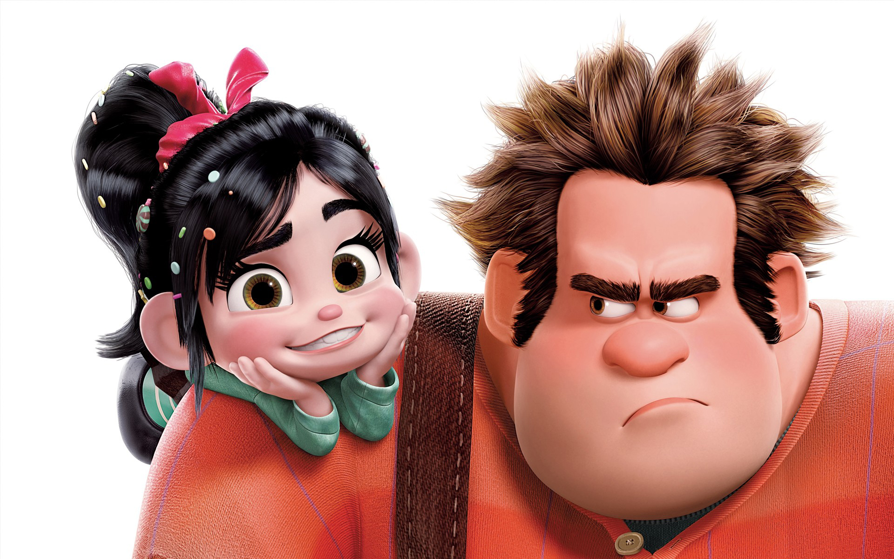

About Ralph
Ralph is the lonely and misunderstood “bad guy” of the game Fix-It Felix Jr. A hulk of a man who, despite his destructive programming, only wants to be accepted and appreciated. He is sensitive and insecure, prone to temper when frustrated or ostracized, which only reinforces the negative label placed upon him. His quest for a hero’s medal is not selfish, but a heartfelt attempt to earn respect and friendship. Ultimately, those who know him realize that beneath his intimidating exterior is a kind, loyal, and brave person whose journey proves true heroism lies in selfless acts, not shiny medals.
Ralph and Vanellope von Schweetz.